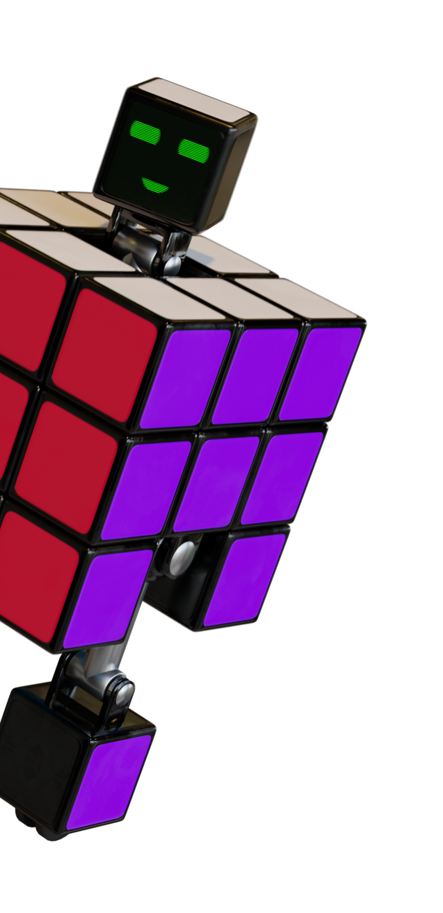
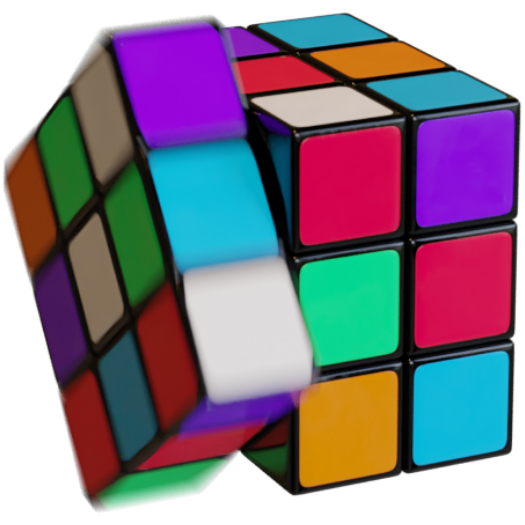

Ruby
Een 3D Rubiks Kubus karakter (Ruby) gemaakt in Blender en laten animeren met passende audio effecten.
Dit project is genomineerd voor de Golden Dot Awards 2022.Tijdens de GDA (Golden Dot Awards) wordt het beste studentenwerk in een studiejaar van studenten van Communication and Multimedia Design (CMD) in de schijnwerpers gezet.
De opdracht was om een eigen karakter te bedenken en deze te laten animeren. Daarnaast moest deze animatie ook voorzien worden van bijpassende audio effecten. Aangezien ik al wat kennis had van Blender (een tool om 3D objecten en animaties in te maken), leek het mij erg passend om te gebruiken, zeker aangezien ik er wel wat meer kennis over wilde opdoen en mijzelf wilde uitdagen om een zo realistisch mogelijke render neer te zetten.
Het resultaat is een Rubiks kubus, wat eigenlijk ook een robot is. Er zijn drie verschillende animaties uitgewerkt, waar Ruby op een telkens verschillende manier beweegt of reageert. Het gezichtje is eigenlijk een schermpje waar z’n ogen en mond op is te zien en waar de verschillende kleuren zijn toestand aangeven (rood, groen en geel/oranje). Het karakter, de omgeving en de animaties zijn op een zo realistisch mogelijke manier vormgegeven en het geluid sluit daar bij aan. Op de website is het mogelijk om zelf een animatie te selecteren, welke dan gaat afspelen. Hierbij zijn passende mini-animaties gemaakt in GIF vorm, welke functioneren als knoppen. Ook is daar een laad animatie aanwezig, wat vereist was voor de opdracht. Deze verloopt soepel over in de neutrale animatie state.
- 
- 